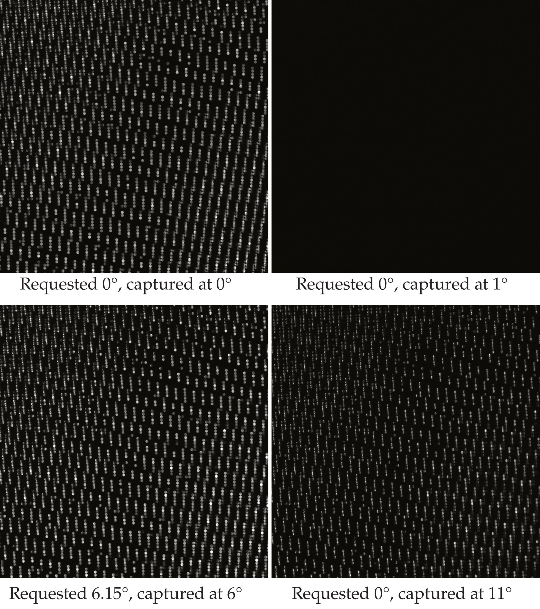

Light field displays
Contents
Table of Contents
Light field displays#
The following images (also shown in the lecture) are acquired for a light field display prototype with a total range of possible angles of \(10^\circ\) in both directions.

How can one explain the bottom right image?
Light transport analysis#
In this exercise, we will try to approximate the light transport matrix of a scene modeled in Mitsuba to gain practical experience with the theory provided in the lecture.
You can use the provided method project_and_acquire(texture) for projecting the image in the parameter texture onto the scene and obtaining the corresponding image as the return value.
The function models a coaxial camera and projector setup.
Please note: To significantly increase the rendering speed, you can install LLVM and then rely on the LLVM variant of Mitsuba.
Some initialization code:
from __future__ import print_function
from ipywidgets import interact, interactive, fixed, interact_manual
import ipywidgets as widgets
import numpy as np
import matplotlib.pyplot as plt
%matplotlib widget
#variant = "scalar_rgb"
#variant = "cuda_ad_rgb"
variant = "llvm_ad_rgb"
import os as os
#os.environ["DRJIT_LIBLLVM_PATH"] = "C:\\Program Files\\LLVM\\bin\\LLVM-C.dll"
os.environ["MI_DEFAULT_VARIANT"] = variant
import drjit as dr
import mitsuba as mi
import matplotlib.pyplot as plt
mi.set_variant(variant)
def imshow(img, cmap=None):
plt.close('all')
plt.figure()
plt.imshow(img, cmap=cmap)
plt.show()
shape = (256, 256) # Reduce this if you experience any memory problems.
def project_and_acquire(texture):
scene = mi.load_dict({
'type': 'scene',
'integrator': {
'type': 'path'
},
'rect' : {
'type': 'rectangle',
'bsdf' : {
'type' : 'diffuse'
},
'flip_normals' : True,
'to_world': mi.ScalarTransform4f.translate(mi.ScalarPoint3f(0,0,10))@mi.ScalarTransform4f.scale(mi.ScalarPoint3f(2000,2000,2000))
},
'sphere1' : {
'type': 'sphere',
'bsdf' : {
'type' : 'dielectric'
},
'center': [2, 2, 4],
'radius': 0.8,
},
'sphere2' : {
'type': 'sphere',
'bsdf' : {
'type' : 'thindielectric'
},
'center': [0, 2, 5],
'radius': 1.5,
},
'sphere3' : {
'type': 'sphere',
'bsdf' : {
'type': 'plastic',
'diffuse_reflectance': {
'type': 'rgb',
'value': [0.1, 0.1, 0.1]
},
'int_ior': 1.9
},
'center': [-2, 2, 4],
'radius': 0.8,
},
'sphere4' : {
'type': 'sphere',
'bsdf' : {
'type': 'roughplastic',
'distribution': 'beckmann',
'alpha' : 0.1,
'int_ior': 1.61,
'diffuse_reflectance': {
'type': 'rgb',
'value': [0.1, 0.1, 0.1]
}
},
'center': [2, 0, 4],
'radius': 0.8,
},
'bunny' : {
'type': 'ply',
'filename': 'bunny.ply',
'flip_normals': False,
'to_world': mi.ScalarTransform4f.translate(mi.ScalarPoint3f(-1.0,-2.5,4))@mi.ScalarTransform4f.scale(mi.ScalarPoint3f(15.0,15.0,15.0)) \
@mi.ScalarTransform4f.rotate(mi.ScalarPoint3f(0.0,1.0,0.0), 180),
'bsdf' : {
'type': 'conductor',
'material': 'Ag'
},
},
'emitter_id' : {
'type': 'projector',
'irradiance' : {
'type': 'bitmap',
'bitmap' : mi.Bitmap(texture),
'wrap_mode': 'mirror'
},
'fov': 80,
'to_world': mi.ScalarTransform4f.look_at(origin=[0, 0, 0],
target=[0, 0, 1],
up=[0, 1, 0]),
'scale':70.0
},
'sensor': {
'type': 'perspective',
'fov': 80,
'to_world': mi.ScalarTransform4f.look_at(
origin=[0, 0, 0],
target=[0, 0, 1],
up=[0, 1, 0]
),
'film': {'type': 'hdrfilm',
'width': shape[1],
'height': shape[0],
'rfilter': {'type': 'gaussian'},
'pixel_format': 'rgb',
'component_format': 'float32'},
'sampler': {'type': 'independent', 'sample_count': 32},
}
})
img = mi.render(scene)
return img
Get a feeling of how the scene looks like by projecting a constant white image onto the scene:
image = project_and_acquire(np.ones((256,256)))
imshow(image)
---------------------------------------------------------------------------
RuntimeError Traceback (most recent call last)
<ipython-input-4-a8e4df344d1a> in <module>
----> 1 image = project_and_acquire(np.ones((256,256)))
2 imshow(image)
<ipython-input-3-9829aef400f8> in project_and_acquire(texture)
1 def project_and_acquire(texture):
----> 2 scene = mi.load_dict({
3 'type': 'scene',
4 'integrator': {
5 'type': 'path'
RuntimeError: [PLYMesh] Error while loading PLY file "bunny.ply": file not found!
Don’t get confused with the wird content of the image. Essentially the scene consists out of some spheres with different material properties and the Stanford Bunny made out of silver.
Approximation of the light transport matrix#
Implement the Arnoldi method and use it to approximate the light transport matrix of the modeled scene.
Try it for different numbers of iterations to see how the result changes.
Scene compensation#
Implement the optical GMRES algorithm to calculate an illumination image that leads to a camera image that is as close to a constant white image as possible.
Light transport matrix probing#
Implement light transport matrix probing to obtain images where
the direct component has been enhanced,
local scattering has been attenuated and
indirect light transport has been enhanced.